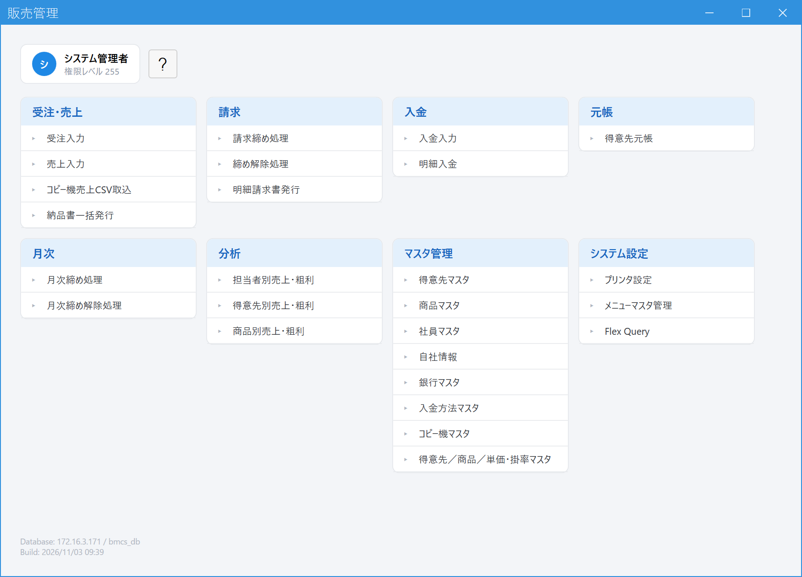
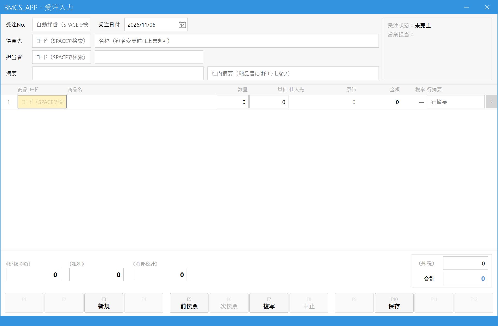
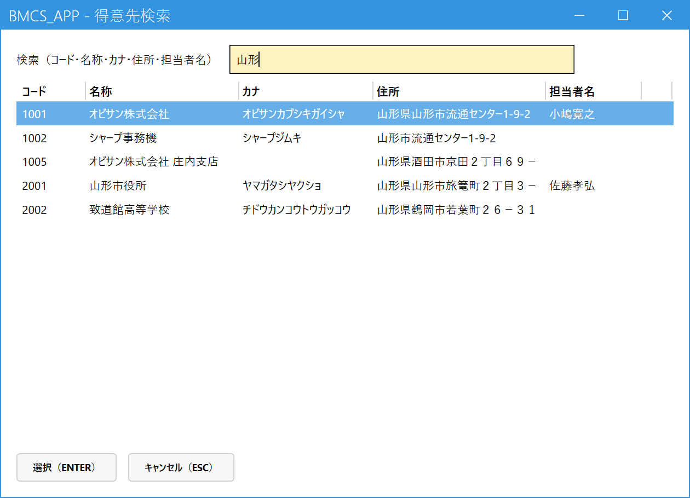
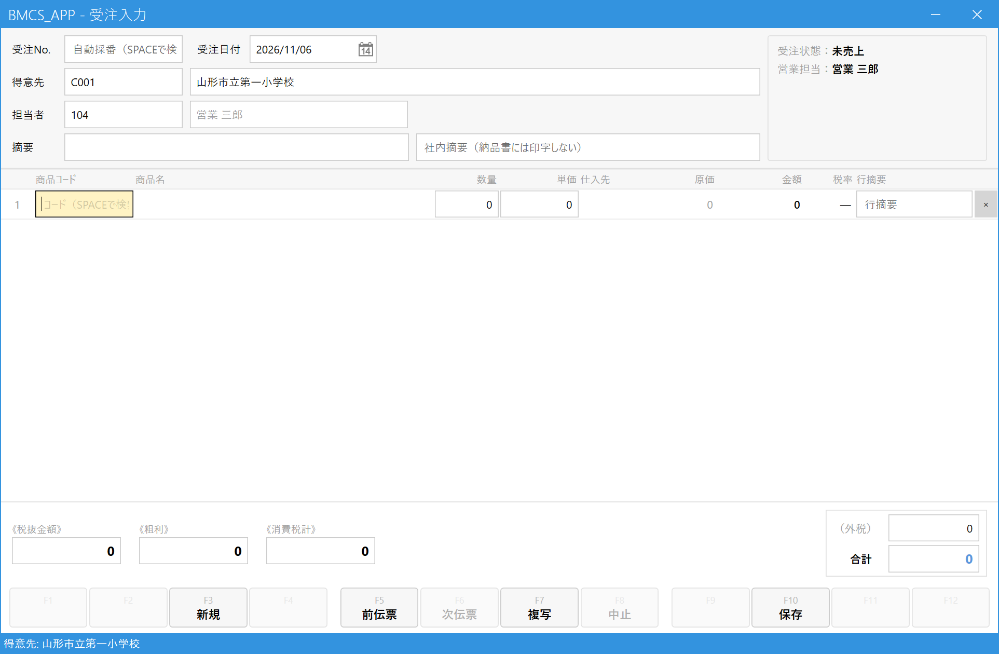
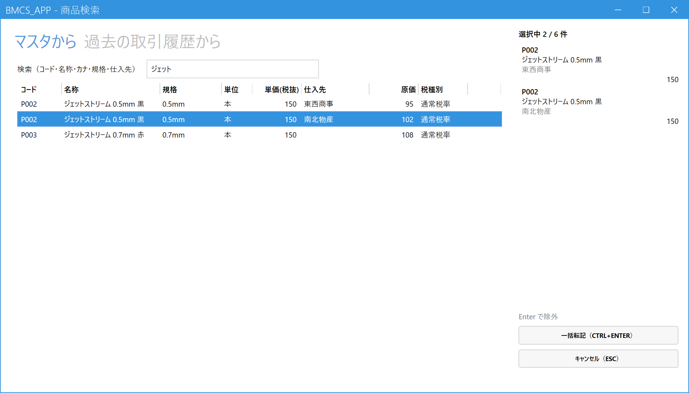
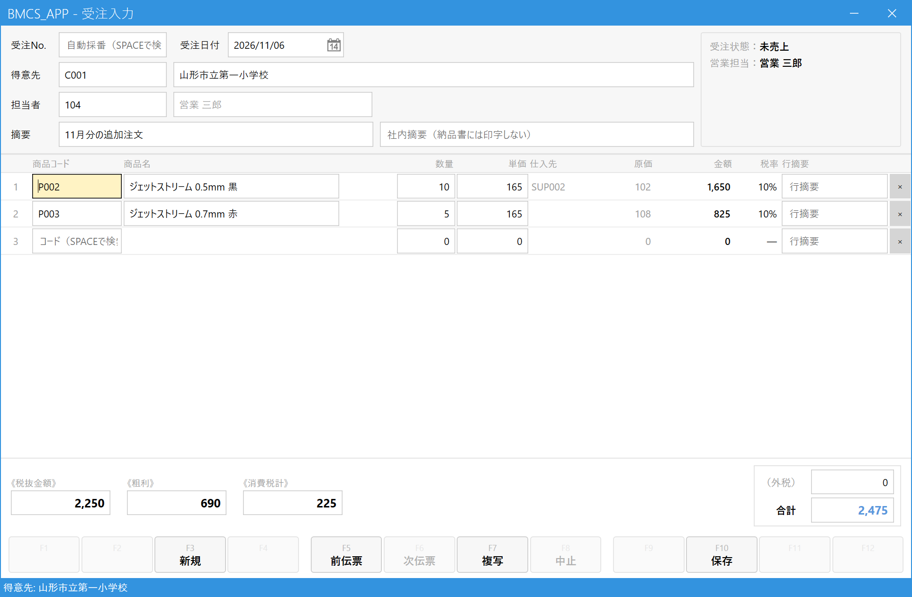

受注を登録する
こんなときに使います
お客様から注文を受けたとき、まず「仮の伝票（受注）」として記録します。
この時点では売上・請求は発生しません。商品が揃って納品するときに、売上登録で受注を呼び出して売上にします。
お客様から注文を受けたとき、まず「仮の伝票（受注）」として記録します。
この時点では売上・請求は発生しません。商品が揃って納品するときに、売上登録で受注を呼び出して売上にします。
所要時間の目安：慣れれば1件1〜2分。必要なもの：得意先コード（わからなければ画面で検索できます）と商品コード・数量。
1.受注入力画面を開く
メインメニューの「受注・売上」の中にある「受注入力」をクリックします。

- 「受注入力」をクリックする
画面の見方

- 受注No.・受注日付：受注Noは保存したときに自動で付きます。日付は今日が入っています。
- 得意先：誰からの注文かを入れます。
- 担当者・摘要：自社の担当者と、伝票のメモ欄です（どちらも任意）。
- 明細：何をいくつ注文されたかを1行ずつ入れます。
- 合計：入力に合わせて自動で計算されます。
- 操作ボタン：新規・保存などのボタンです。ボタン上段の小さな「F10」などは、同じ操作ができるキーボードのキーです。最後に「保存」を押します（F10 でも可）。
2.得意先を決める
得意先コードを知っているとき：得意先欄にコードを入力して Enter。得意先名が自動で入ります。
コードがわからないとき：得意先欄で Space を押すと検索画面が開きます。

- 名称・カナ・住所などの一部を入力すると、一覧が絞り込まれます。
- 一覧から選びます。入力後に Enter を1回押すと一覧へ移動、もう1回 Enter で決定します。マウスで行を選んでもかまいません。
- 「選択（Enter）」ボタンでも決定できます。やめるときは Esc。
得意先が決まると、得意先名・担当者・営業担当が自動で入ります。

- 得意先名：そのまま書き換えられます。学校のクラス名・先生名など、宛名を今回だけ変えたいときはここを直接修正します（マスタは変わりません）。
- 担当者：得意先の営業担当が入ります。この注文の担当が別の人なら、コードを入れ直します（Spaceで検索）。
- 受注状態は、新規のうちは「未売上」です。
3.商品と数量を入れる
明細の1行目、商品コード欄から入力します。コードがわかれば入力して Enter。わからなければ Space で商品検索を開きます。

- 商品名・コード・仕入先名などの一部を入力して絞り込みます（仕入先のコードや名称でも探せます）。
- 入れたい行で Enter（またはダブルクリック）。右側の「選択中」に入ります。同じ操作でもう一度押すと外れます。同じ商品でも、原価を登録した仕入先ごとに行が分かれます（この例では、同じ商品が東西商事と南北物産の2行）。原価を登録した仕入先がない商品（この例の0.7mm 赤）は、仕入先が空欄の1行で、標準原価が出ます。並び順は、商品コード、同じ商品は仕入先コードの順です。
- 仕入先・原価：選んだ行の仕入先と原価が、そのまま明細に入ります。
- 選んだ行です。仕入先の名前も出ます。最大6件まで同時に選べ、同じ商品でも仕入先が違えば別の行として選べます（同じ商品・同じ仕入先を重ねて選ぶことはできません）。「過去の取引履歴から」タブでは、この得意先に以前売った商品から選べます（前回の仕入先と、いまの原価が出ます）。
- 「一括転記」（Ctrl+Enter）で明細に取り込みます。
商品を選ぶと、商品名・単価・税率に加えて、仕入先と原価も自動で入り（商品検索で選んだ行の仕入先と原価。コードを入力して Enter したときは、商品の主仕入先とその原価）、カーソルが数量へ移ります。数量を入れて Enter で次の欄へ進みます。商品を入れると空の行が自動で1行増えるので、続けて次の商品を入力できます。

- 数量：注文された数を入れます。
- 単価：得意先ごとの取り決めがあればそれが、なければ商品の標準単価が入ります。値引き価格など、変えたいときはここを直接書き換えます。
- 仕入先：原価の元になる仕入先です（見るだけで、直接は書き換えられません）。商品検索で選んだ行の仕入先が入ります。仕入先のない行は空欄です。変えるときは下の「仕入先と原価」を見てください。
- 原価：粗利の計算に使う、商品1つあたりの原価です（見るだけで、直接は書き換えられません）。選んだ仕入先の原価が入ります。
- 金額：数量×単価で自動計算されます（入力不要）。
- 行摘要：その行だけのメモ（任意）。
- ×：その行を削除します。入れ間違えた行はここで消します。
仕入先と原価
明細の仕入先と原価は、商品を入れた時点で決まります。どちらも明細の上では見るだけで、直接は書き換えられません。
| 商品の入れ方 | 入る仕入先と原価 |
|---|---|
| 商品検索の「マスタから」で行を選ぶ | 選んだ行の仕入先と原価（仕入先／商品／原価マスタで登録したもの）。原価を登録した仕入先がない商品は、仕入先なしで、商品マスタの標準原価。 |
| 商品検索の「過去の取引履歴から」で行を選ぶ | 前回その得意先に売ったときの仕入先と、いまの原価。前回の仕入先の原価がいまは登録されていないときは、仕入先なしで標準原価。 |
| 商品コードを入れて Enter（検索を開かない） | 商品の主仕入先（商品マスタで決めた仕入先）と、その原価。主仕入先が空欄の商品や、主仕入先の原価が登録されていない商品は、仕入先なしで標準原価。 |
| やりたいこと | 操作 |
|---|---|
| 別の仕入先に変える | その行の商品を選び直します。商品コード欄で Space を押して商品検索を開き、変えたい仕入先の行を選びます（行を選び直すと、仕入先も原価も入れ替わります）。 |
| 仕入先なし（標準原価）にする | 原価を登録した仕入先がある商品は、一覧に標準原価の行が出ません。仕入先なしで売りたい商品は、仕入先／商品／原価マスタで、その商品の原価を空欄にして登録します（その仕入先は、その商品の一覧に出なくなります）。 |
| 入れた仕入先を確認する | 仕入先欄にマウスを重ねると、仕入先名が表示されます。 |
- 仕入先欄は、Tab・Enterのカーソル移動では止まりません。
- 登録済みの受注を開いたり、複写したときは、保存されている仕入先と原価がそのまま出ます（マスタの現在の値で引き直しません）。
商品名を、その伝票だけ変えたいときは、商品名の欄をマウスでクリックして書き換えられます（書き換えると末尾に「.」が付き、マスタの名称と区別できます）。
4.内容を確認して保存する
得意先・明細・合計が正しいか見直し、保存を押します。
- 摘要：伝票に残したいメモ（任意）。右隣の「社内摘要」は社内用で、納品書には印字されません。
- 合計：税込の合計です。注文内容と合っているか確認します。税区分が請求単位の得意先では、消費税は請求を締めるときに計算し直すため、「《消費税計（参考）》」「（外税・参考）」と表示されます。
- 保存：ここを押すか F10。
保存に成功すると、画面下に「登録しました。受注No. ○○○○○○○○」と表示され、画面は次の入力のために空に戻ります。控えが必要なときは、この受注Noを書き留めておきます。
「得意先を指定してください」「明細行を1件以上入力してください」と表示されたときは、足りない項目を入力してもう一度保存します。
5.よくある操作
| やりたいこと | 操作 |
|---|---|
| 登録済みの受注を開いて見る・直す | 受注No.欄に番号を入れて Enter、または Space で一覧から選ぶ。未売上の受注だけ修正できます。直したら保存。 |
| 前に登録した受注を見たい | 画面下の「前伝票」（F5）・「次伝票」（F6）で前後の受注に移動します。 |
| 過去の受注と同じ内容で新しく登録したい | 画面下の「複写」（F7）で複写元を選ぶと、内容が入った状態から新規登録できます。 |
| 注文がキャンセルになった | その受注を開いて「中止」（F8）。確認が出るので「はい」を押します。中止した受注は元に戻せません（間違えたら新しく入力し直します）。売上が完了した受注は中止できません。 |
| 最初から入力し直したい | 「新規」（F3）で画面を空にします。 |